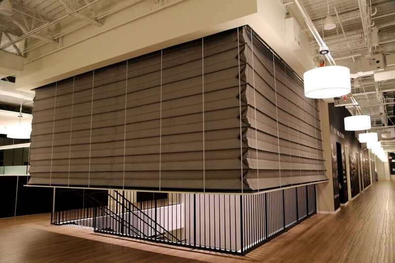

Với thời buổi hiện đại ngày nay những bước tiến mới trong sản xuất vật liệu chống cháy và phòng cháy chữa cháy được phát triển. Và rèm ngăn cháy là bức tiếng mới nhất đang được sử dụng phổ biến trong các trung tâm thương mại lớn, chung cư… Sử dụng rèm chống cháy một phần nào đó trong việc ngăn lửa lan lây ra ngoài xảy ra hỏa hoạn lớn. Qua bài viết sẽ đưa tới bạn những thông tin để bạn hiểu rõ hơn về rèm chống cháy.
Rèm ngăn cháy với tên gọi khác là rèm ngăn khói, màn ngăn cháy là phát minh đột phá của nhân loại trong các năm gần dây để hỗ trợ phòng cháy chữa cháy. Thiết bị này được làm từ các vật liệu bền bỉ có kết cấu hỗn hợp đan xen nhằm ngăn tỏa cháy lan ra ngoài và giảm được một phần nào đó khi hỏa hoạn.
Đối với hai loại rèm này chỉ khác nhau ở độ chịu nhiệt, rèm ngăn cháy sẽ chịu được từ mức độ 800 độ C đến 1000 độ C còn rèm ngăn khói chỉ ở mức 600 độ C. Màn ngăn cháy có thể sử dụng với kích thước lớn với chiều rộng khoảng 60m và chiều cao khoảng 13m, nhờ vậy có thế cản được những đám cháy lớn không mong muốn. Sử dụng loại rèm này bạn có thể gấp gọn chúng một cách nhanh gọn tiết kiệm thời gian sử dụng.
Rèm chống khói được sử dụng lắp đặt ở những nơi đông người qua lại như trung tâm thương mại, bệnh viện, cao ốc…Khi có dấu hiệu của cháy rèm sẽ được dụng ngăn khói và lửa lan ra bên cạnh.
Do nhu cầu bảo vệ tính mạng con người và tài sản đang rất được coi trọng lên màn ngăn cháy đang được sản xuất phong phú đa dạng phù hợp với mọi nhu cầu. Và hiện nay trên thị trường có 2 loại phổ biến là rèm cố định và rèm di động.
Rèm chống cháy cố định thường sẽ có kết cấu không quá phức tạp chỉ sử dụng tại một khu vực cố định duy nhất. Rèm chống cháy cố định thường được làm bởi các loại những chất liệu bền bỉ cứng rắn như thép, tấm cách nhiệt ( VD: cửa sập chống cháy)
Rèm ngăn khói di động là loại tiến hơn rèm ngăn khói cố định với lối hiện đại với cuộc sống hiện đại ngày nay. Được vận hành bằng điện có tín hiệu thông báo khi cháy xảy ra. Vì có nguồn điện tích dự phòng khi mất điện rèm này vẫn hoạt động bình thường
Rèm ngăn cháy làm một trong những giải pháp chống cháy có nhiều công dụng trong việc phòng cháy và hỗ trợ chữa cháy. Tuy nhiên, để tận dụng hiệu quả, cần lưu ý:
Khi đã biết rõ về những lưu ý về rèm chống cháy việc sử dụng chúng sẽ rất đơn giản. Giúp chúng ta bảo vệ tính mạng và của cải tốt hơn và hỗ trợ phòng cháy chữa cháy dễ dàng hơn.